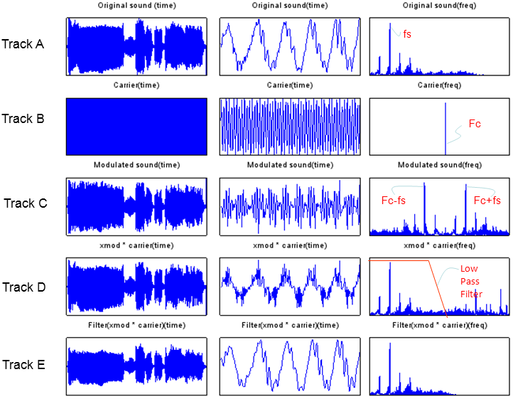

| AM Modulation/Demodulation |
|
Following is an example showing the overall procedure of AM modulation and demodulation. In this example, I will show you how a sound data can be modulated and demodulated. You will see how well this process has done by listening and comparing the input original sound file and the demodulated sound file.
As you see there are three columns in the following set of graphs. The first column shows the signal and carrier data in time domain. But since there are too many data points you could hardly see the details of the data. So I clipped out only a small portions of the data and plot them in the second column so that you can see the details. The third column shows the fft result (frequency spectrum) for the data shown in the first column.
Track A shows the plot for the original non-modulated data. This is a wav file sound data. Track B is the plot for the carrier signal that will be used to modulate the data. This is meant to be pure cosine wave. Track C is the plot for the modulated signal which means the result of "signal * carrier". Pay attention to the spectrum part. You would see the signal frequency is shifted by the carrier frequency. Track D is the plot for the first step of the demodulation. This is the result of the modulated signal multiplied again by carrier. Look into the spectrum part. You would notice that the spectrum become almost the same as the original signal (but not exactly same mainly because of 'carrier * carrier' terms). Track E is the final output of the demodulation. This is the result of Track D filtered by a low pass filter.

Following is the Octave/Matlab source code for the sequence of process shown above. This is the one for the tutorial. So it wouldn't mean anything if you don't learn anything from this. So please make changes for various parameters and run and see the result until you have better knowledge of your own.
Applying various Fs, Fc and filter type and coefficient would be good targets for you to attack.
hfile = 'SampleWave.wav'; [x, Fs] = wavread(hfile);
Fc = 3000; % Carrier frequency sig=x';
% Modulate x using single- and double-sideband AM. l = length(sig); t=0:1./Fs:(l-1)./Fs; carrier=cos(2.*pi.*Fc.*t); xmod = sig.*carrier;
% Lowpass filter [num,den] = butter(10,2*Fc/Fs);
t = 0:1./Fs:(length(xmod)-1)./Fs; e = xmod.*cos(2.*pi.*Fc.*t); xdemod = filter(num,den,e).*2; wavwrite(xdemod',Fs,'AmDemoOut.wav');
% Plot spectra of both modulated signals. mag_N0 = 500; mag_N = mag_N0+200;
sig_fft = fft(sig); sig_fft_abs = abs(sig_fft); carrier_fft = fft(carrier); carrier_fft_abs = abs(carrier_fft); xmod_fft = fft(xmod); xmod_fft_abs = abs(xmod_fft); e_fft = fft(e); e_fft_abs = abs(e_fft); xdemod_fft = fft(xdemod); xdemod_fft_abs = abs(xdemod_fft);
fft_freq_range = round(length(sig_fft)/2.0);
subplot(5,3,1); plot(sig);title('Original sound (time)');set(gca,'XTick',[],'YTick',[]); subplot(5,3,2); plot(sig(mag_N0:mag_N));title('Original sound(time)');xlim([0 (mag_N-mag_N0)]);set(gca,'XTick',[],'YTick',[]); subplot(5,3,3); plot(sig_fft_abs(1:fft_freq_range));title('Original sound(freq)');set(gca,'XTick',[],'YTick',[]);
subplot(5,3,4); plot(carrier);title('Carrier(time)');set(gca,'XTick',[],'YTick',[]); subplot(5,3,5); plot(carrier(mag_N0:mag_N));title('Carrier(time)');xlim([0 (mag_N-mag_N0)]);set(gca,'XTick',[],'YTick',[]); subplot(5,3,6); plot(carrier_fft_abs(1:fft_freq_range));title('Carrier(freq)');set(gca,'XTick',[],'YTick',[]);
subplot(5,3,7); plot(xmod);title('Modulated sound(time)');set(gca,'XTick',[],'YTick',[]); subplot(5,3,8); plot(xmod(mag_N0:mag_N));title('Modulated sound(time)');xlim([0 (mag_N-mag_N0)]);set(gca,'XTick',[],'YTick',[]); subplot(5,3,9); plot(xmod_fft_abs(1:fft_freq_range));title('Modulated sound(freq)');set(gca,'XTick',[],'YTick',[]);
subplot(5,3,10); plot(e);title('xmod * carrier(time)');set(gca,'XTick',[],'YTick',[]); subplot(5,3,11); plot(e(mag_N0:mag_N));title('xmod * carrier(time)');xlim([0 (mag_N-mag_N0)]);set(gca,'XTick',[],'YTick',[]); subplot(5,3,12); plot(e_fft_abs(1:fft_freq_range));title('xmod * carrier(freq)');set(gca,'XTick',[],'YTick',[]);
subplot(5,3,13); plot(xdemod);title('Filter(xmod * carrier)(time)');set(gca,'XTick',[],'YTick',[]); subplot(5,3,14); plot(xdemod(mag_N0:mag_N));title('Filter(xmod * carrier)(time)');xlim([0 (mag_N-mag_N0)]);set(gca,'XTick',[],'YTick',[]); subplot(5,3,15); plot(xdemod_fft_abs(1:fft_freq_range));title('Filter(xmod * carrier)(freq)');set(gca,'XTick',[],'YTick',[]);
|